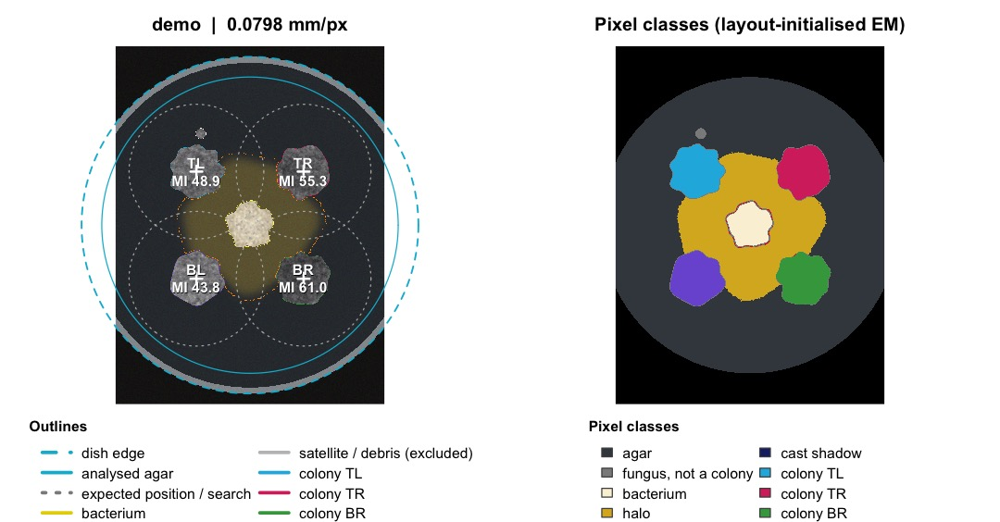
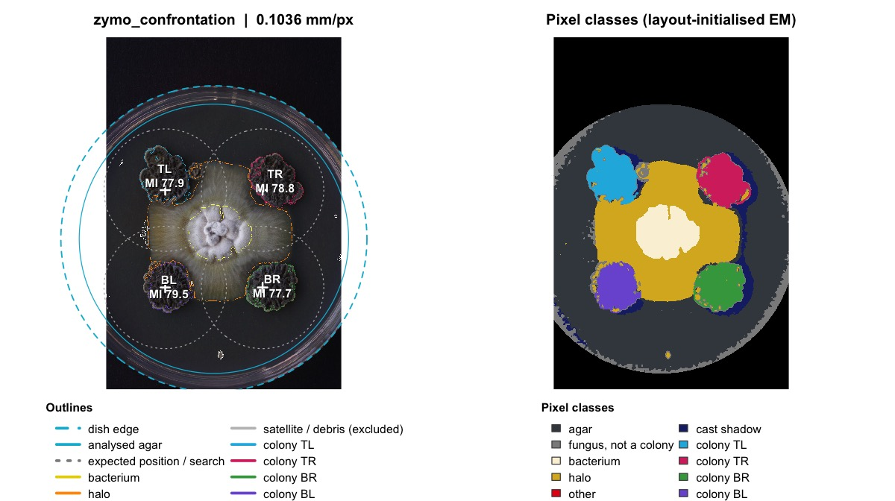
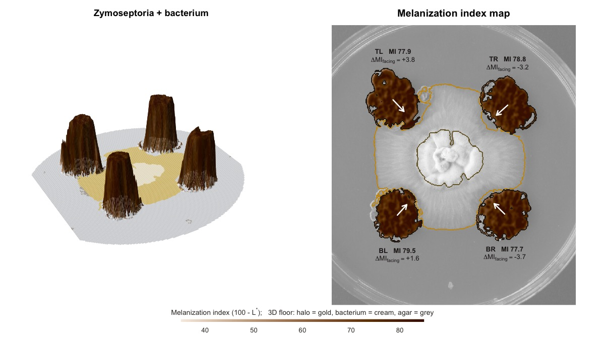
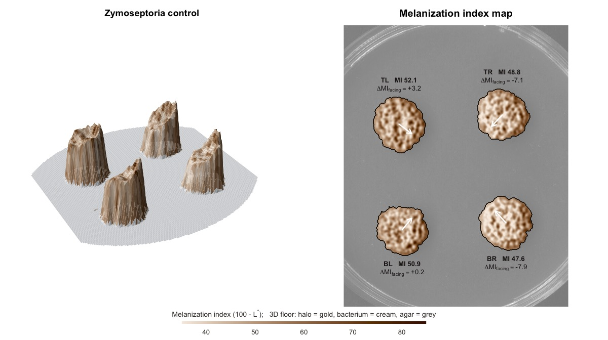
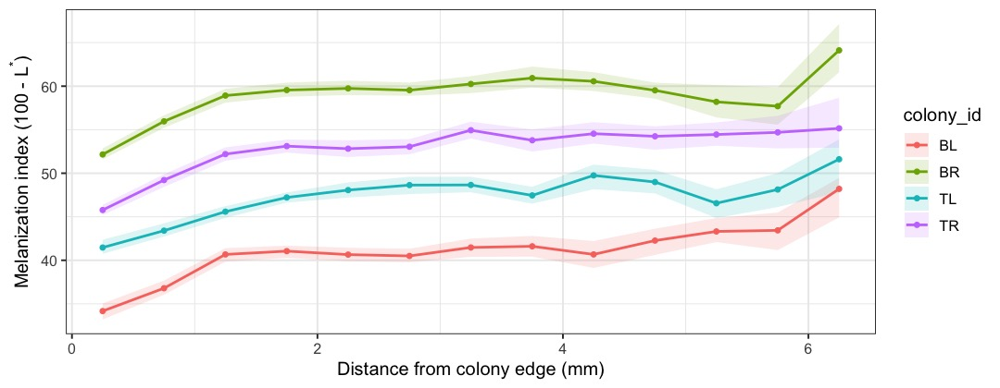
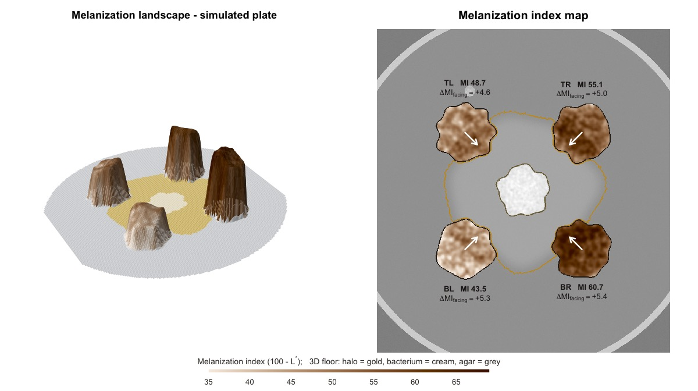

vignettes/MycoHalo.Rmd
MycoHalo.RmdIn our confrontation assay, four Zymoseptoria tritici colonies grow at fixed positions in the four quadrants of a Petri dish. On treatment plates a bacterium sits in the centre. We want to know whether, and where, the fungus changes its melanization when it interacts with the bacterium.
Measuring this on a grayscale image fails for three reasons:
MycoHalo solves these with (i) calibrated colour (CIELAB) instead of gray, (ii) texture, (iii) a model of the agar background and of the lighting, and (iv) the known inoculation layout as a spatial prior for separating the cultures.
Image analysis cannot recover information that the photograph does not contain. The following protocol typically halves plate-to-plate technical variation.
analyze_plate(reference = ...)
removes exposure and white-balance differences between photographs, days
and cameras. In the simulations this cut the error in absolute
melanization from ~7 L* units to < 0.2.mm_per_px.
# A simulated confrontation plate (replace with your file path)
sim <- simulate_plate(seed = 42, facing_darkening = 4)
res <- analyze_plate(sim$image, id = "demo", verbose = FALSE)
res
#> <mycohalo_result> plate "demo"
#> • Scale: 0.07978 mm/px; agar L* = 22.2
#> • Colonies detected: 4 / 4; satellites: 1
#> • Bacterium r = 6.24 mm; halo outer r = 17.06 mm
#> colony_id area_mm2 L_mean MI_mean MI_lo MI_hi delta_MI_facing
#> TL 155 51.1 48.9 48.6 49.3 3.54
#> TR 154 44.7 55.3 54.9 55.7 4.04
#> BR 155 39.0 61.0 60.7 61.3 4.43
#> BL 155 56.2 43.8 43.4 44.1 4.30
#> growth_inhibition_pct
#> -1.405
#> -0.553
#> -4.973
#> 1.917
plot_qc(res)
Quality-control figure. Left: detected dish (dashed), analysed agar disk (solid), expected inoculation points (+) with their search radius (dotted), colony outlines (one colour per colony), bacterium (yellow), halo (orange), satellites and debris (white). Right: pixel classes; each separated colony is filled with the same colour as its outline. Legends are below the panels.
Always look at the QC figure before using the numbers. It is also saved automatically for every plate in batch mode.
For real files:
# confrontation plate: 4 Zymoseptoria + central bacterium (default layout)
res <- analyze_plate("plates/2026_05_26_20.JPG",
reference = c(0.08, 0.92, 0.03)) # grey card, bottom-left
# control plate: same layout, no bacterium
ctrl <- analyze_plate("plates/2026_05_26_37.JPG",
layout = plate_layout(centre = "none"))Two of our photographs travel with the package
(inst/extdata/), so the whole pipeline can be tried on real
data:
treat <- analyze_plate(example_plate("confrontation"), verbose = FALSE)
#> Warning: Strong illumination gradient (86 %); improve lighting.
ctrl <- analyze_plate(example_plate("control"),
layout = plate_layout(centre = "none"), verbose = FALSE)
#> Warning: Strong illumination gradient (72 %); improve lighting.
rbind(cbind(plate = "bacteria", treat$colonies[, c("colony_id", "area_mm2", "MI_mean")]),
cbind(plate = "control", ctrl$colonies[, c("colony_id", "area_mm2", "MI_mean")]))
#> plate colony_id area_mm2 MI_mean
#> x bacteria TL 176.1905 77.92892
#> x1 bacteria TR 158.4609 78.80487
#> x2 bacteria BR 154.4231 77.71022
#> x3 bacteria BL 138.6264 79.48823
#> x4 control TL 171.5329 52.10098
#> x11 control TR 162.9988 48.76903
#> x21 control BR 173.2109 47.60342
#> x31 control BL 155.2186 50.91183
plot_qc(treat)
plot_melanization_map(treat, mi_range = c(35, 85), main = "Zymoseptoria + bacterium")
plot_melanization_map(ctrl, mi_range = c(35, 85), main = "Zymoseptoria control")
Your own photos go in any folder on your computer. Only example data
belongs inside the package, in inst/extdata/, never in a
top-level folder.
A whole experiment is analysed from a folder of photos plus a small
metadata sheet: one row per photo. make_metadata() writes
that sheet for you, and you only fill in what differs between plates.
The treatment column decides the layout:
"control" plates are analysed without a central
bacterium.
# 1. create the sheet (file names containing "ctrl" become controls)
make_metadata("photos",
treatment = "bacteria",
patterns = c(control = "ctrl|control"),
extra = list(bacterium = "isolate_X", zymo_strain = "strain_Y", day = 7))
# -> photos/plate_metadata.csv:
# file, plate_id, treatment, bacterium, zymo_strain, medium, day, replicate, photo_date, notes
# 2. fix / complete it in Excel or in R, e.g.
meta <- read.csv("photos/plate_metadata.csv")
meta$treatment[meta$file == "2026_05_26_37.JPG"] <- "control"
write.csv(meta, "photos/plate_metadata.csv", row.names = FALSE, na = "")
# 3. analyse everything; the layout follows the treatment column
out <- analyze_plates("photos", metadata = meta, layout = layout_by_treatment,
qc_dir = "qc", reference = c(0.08, 0.92, 0.03))
out$colonies <- correct_facing_bias(out$colonies) # lighting bias from controls
write.csv(out$colonies, "colonies.csv", row.names = FALSE)
compare_melanization(out$colonies, group = "treatment", reference = "control")Several bacteria in one experiment? Put the isolate in
bacterium and use it as the group
(compare_melanization(out$colonies, group = "bacterium")),
with the controls coded as "none". The same columns are
available for day, strain or medium. The script
system.file("scripts", "analyse_experiment.R", package = "MycoHalo")
does all of this in four steps.
Directional light. A raised colony is always
brighter on the side facing the lamp, and it casts a shadow on the other
side. MycoHalo detects and removes the cast shadows (dark, smooth and
agar-coloured). The remaining brightness asymmetry depends only on where
the colony sits in the frame, so correct_facing_bias()
subtracts, for each position (TL, TR, BR, BL), the mean
delta_MI_facing of the control plates.
plate_layout() # default: TL, TR, BR, BL + bacterium
#> <mycohalo_layout> 4 fungal colonies; centre: bacteria
#> id x_rel y_rel
#> TL -0.318 -0.318
#> TR 0.318 -0.318
#> BR 0.318 0.318
#> BL -0.318 0.318
plate_layout(centre = "none") # controls
#> <mycohalo_layout> 4 fungal colonies; centre: none
#> id x_rel y_rel
#> TL -0.318 -0.318
#> TR 0.318 -0.318
#> BR 0.318 0.318
#> BL -0.318 0.318
plate_layout(radius_mm = 20) # inoculated 20 mm from the centre
#> <mycohalo_layout> 4 fungal colonies; centre: bacteria
#> id x_rel y_rel
#> TL -0.318 -0.318
#> TR 0.318 -0.318
#> BR 0.318 0.318
#> BL -0.318 0.318
plate_layout(n_colonies = 3, ids = c("A", "B", "C"), start_deg = -90)
#> <mycohalo_layout> 3 fungal colonies; centre: bacteria
#> id x_rel y_rel
#> A 2.76e-17 -0.450
#> B 3.90e-01 0.225
#> C -3.90e-01 0.225The expected positions only need to be approximately right:
each colony is searched within search_frac (default 0.4) of
the dish radius around its expected point, and colonies are matched to
positions closest-first.
photo ─► read & resize ─► detect dish (RANSAC circle, sub-pixel edge) ─► scale (mm/px)
─► agar colour (mode) ─► flat-field (log-quadratic, linear RGB) ─► [grey-card calibration]
─► objects = colour outliers ∪ texture outliers
─► pixel classes: fungus / bacterium / halo / other (layout-initialised mixture, EM)
─► bacterium = compact central component ─► halo = connected diffusion zone
─► colony cores (distance-transform maxima) matched to layout ─► seeded watershed
─► half-contrast edge placement ─► measurements, profiles, bootstrap CIs, QCPixel values are converted from sRGB to CIE 1976 L*a*b* (D65). CIELAB is approximately perceptually uniform: one unit of L* is the same visible change in lightness whether a colony is pale or almost black. This makes L* differences comparable across the whole melanization range, which is not true for raw RGB or grey values (they are gamma-encoded and not perceptually linear). a* (green–red) and b* (blue–yellow) carry the chromatic information that separates achromatic melanized hyphae from the warm-coloured bacteria and halo.
The agar colour is found as the mode of the colour distribution inside the dish (coarse 3-D histogram + mean shift). This works even on crowded plates, because agar pixels cluster tightly in colour space while colonies and halos spread along gradients.
Light fall-off towards the image edges (vignetting) or oblique
lighting would make a colony look darker simply because of
where it is on the dish. Illumination multiplies linear light,
so MycoHalo fits, per linear RGB channel, a quadratic surface to
log-intensity of agar pixels (with 3-MAD trimming of outliers) and
divides it out, normalising every pixel to the illumination at the dish
centre. The QC table reports the illumination range that was corrected
(illumination_range_pct).
A pixel is an object (not agar) if either
Each object pixel is described by
The direction is the key. A diffusible pigment at falling concentration moves the colour along one straight line from the agar colour towards the pigment colour, so the faint fringe of a halo points the same way as its saturated core. Grey fungal tissue points along the neutral lightness axis at every level of melanization. Because the direction of a faint pixel is uncertain, the model widens each pixel’s direction likelihood by its own noise variance, (σ_noise / ΔE)² (a heteroscedastic, measurement-error-aware mixture). The halo, being a diffusion gradient, gets a magnitude likelihood that is flat up to its core level.
The mixture is fitted by EM. It is initialised from the layout: textured pixels near the expected fungal positions seed “fungus”, the centre seeds “bacterium”, and smooth pixels in the ring around the centre seed “halo”. The classes therefore keep their biological meaning. A halo class whose colour direction is within 12° of the fungus is dropped, because it only modelled colony margins.
Posteriors are smoothed in space before the decision, weighted by confidence. Faint pixels borrow the class of the confident tissue around them within 0.5 mm, and pixels that fit no class are marked “other” and are never measured.
For unusual pairs (a pigmented bacterium, a different fungus) you can instead train a supervised classifier from a few clicked regions:
p <- read_plate("plate.jpg") |> detect_plate() |> model_background()
reg <- annotate_plate(p) # click fungus, bacteria, halo regions
clf <- train_classifier(extract_training_pixels(p, reg))
res <- analyze_plate("plate.jpg", classifier = clf)res$colonies)
| column | meaning |
|---|---|
area_mm2, eq_diameter_mm,
perimeter_mm
|
size (scale from dish diameter) |
circularity, solidity
|
4πA/P² and area / convex-hull area (lobing, sectoring) |
L_mean, L_median, L_sd,
L_q05…q95
|
CIE lightness of the colony interior |
MI_mean, MI_median
|
melanization index 100 − L* (higher = darker) |
MI_lo, MI_hi
|
95 % spatial block-bootstrap CI of MI_mean
|
gray_imagej |
mean (R+G+B)/3 on 0–255, as ImageJ/Fiji “8-bit” |
a_mean, b_mean, chroma_mean,
hue_deg
|
colour (brown shift of DHN melanin) |
dark_fraction |
fraction of pixels with L* < dark_L (if given) |
MI_facing, MI_away,
delta_MI_facing
|
melanization of the half facing the bacterium vs. the opposite half |
R_toward_mm, R_away_mm,
growth_inhibition_pct
|
radius towards / away from the bacterium; PIRG = 100 (R_away − R_toward)/R_away |
gap_bacteria_mm, gap_halo_mm
|
edge-to-edge distance to bacterium and halo (0 = contact) |
specular_fraction,
offset_from_expected_mm
|
QC |
On control plates the “interaction target” is the dish centre, so the
same side-specific metrics give the null distribution.
Always compare delta_MI_facing and
growth_inhibition_pct on treatment plates against controls,
never against zero: lobed colonies are never perfectly symmetric.
res$profiles)
The growing margin of a Z. tritici colony is young and often lighter; older central tissue is darker. MycoHalo measures melanization in rings defined by the distance from the colony edge (Euclidean distance transform), not from the centroid, so the age gradient is followed correctly in lobed colonies.
sim2 <- simulate_plate(seed = 7, edge_lightening = 10)
res2 <- analyze_plate(sim2$image, verbose = FALSE)
if (requireNamespace("ggplot2", quietly = TRUE)) plot_profiles(res2)
Neighbouring pixels are strongly correlated (same hypha, JPEG blocks, in-camera processing), so a naive pixel bootstrap gives uselessly narrow CIs. The intervals use a spatial block bootstrap: 0.5 mm blocks are resampled as units.
plot_melanization_map() shows the whole plate at once.
On the left, a 3D shaded surface in which each colony rises with a
height and sepia colour given by its local melanization index, over a
floor that shows the halo (gold) and the bacterium (cream). On the
right, the same MI field is drawn over the faded photograph. An arrow on
each colony points to the bacterium and is labelled with the
side-specific response ΔMIfacing.
sim3 <- simulate_plate(width = 900, height = 1200, seed = 42,
facing_darkening = 5, edge_lightening = 8)
res3 <- analyze_plate(sim3$image, id = "simulated plate", verbose = FALSE)
plot_melanization_map(res3)
Melanization landscape of a simulated confrontation plate in which each colony is 5 L* units darker on the side facing the bacterium.
Use type = "3d" or type = "2d" for single
panels, and fix mi_range when you compare several plates,
so that colours and heights mean the same thing in every figure.
Z. tritici produces 1,8-dihydroxynaphthalene (DHN) melanin
via a polyketide synthase pathway (e.g. PKS1), under
transcriptional control that includes the Zmr1 regulator.
Melanization varies strongly among strains and with the environment
(Lendenmann et al. 2014; Krishnan et al. 2018). In culture it is usually
quantified as the mean grey value of colony photographs. MycoHalo
reports that value (gray_imagej) for comparability, but
uses L* as its primary readout because it is calibrated and perceptually
linear.
Some points to keep in mind:
delta_MI_facing and the halo metrics
(gap_halo_mm) capture the spatial component,
MI_mean the global one.reference.The four colonies on one dish share medium, bacterium, handling and photograph, so they are not independent replicates. Treating them as independent is pseudoreplication and inflates significance. Use a mixed model with a random plate effect (or analyse plate means):
set.seed(1)
d <- data.frame(plate_id = rep(sprintf("p%02d", 1:12), each = 4),
treatment = rep(c("control", "bacteria"), each = 24))
d$MI_mean <- 55 + 3 * (d$treatment == "bacteria") +
rep(rnorm(12, 0, 1.5), each = 4) + rnorm(48, 0, 1)
cmp <- compare_melanization(d, response = "MI_mean", group = "treatment",
reference = "control")
cmp$method
#> [1] "linear mixed model: response ~ group + (1 | plate)"
cmp$coefficients
#> term estimate se t lower upper df_approx
#> 1 (Intercept) 54.916795 0.5481695 100.182137 53.842403 55.991188 10
#> 2 bacteria 4.107045 0.7752288 5.297849 2.587624 5.626465 10
#> p_value
#> 1 2.405555e-16
#> 2 3.486151e-04
cmp$icc # share of variance between plates
#> [1] 0.659384A useful design rule: with an intra-plate correlation (ICC) of ~0.5, four colonies per plate carry the information of only ~1.6 independent colonies. Add plates, not colonies.
Every algorithmic step was validated on simulated plates with known
truth (simulate_plate()): grey, wrinkled, lobed colonies, a
whitish bacterium, a diffuse yellow halo overlapping the colonies in
brightness, satellites, vignetting, exposure error and sensor noise. The
script is in
system.file("validation", "validate.R", package = "MycoHalo").
v <- read.csv(system.file("validation", "simulation_validation.csv", package = "MycoHalo"))
agg <- do.call(rbind, lapply(split(v, v$scenario), function(s) data.frame(
scenario = s$scenario[1],
detected = paste0(sum(s$detected), "/", nrow(s)),
max_abs_area_err_pct = max(abs(s$area_err_pct), na.rm = TRUE),
max_abs_MI_err = max(abs(s$MI_err), na.rm = TRUE),
mean_delta_MI_facing = round(mean(s$dMI_facing, na.rm = TRUE), 2))))
agg[order(agg$max_abs_MI_err), ]
#> scenario detected max_abs_area_err_pct
#> control_plate control_plate 4/4 0.11
#> no_halo no_halo 4/4 0.10
#> no_vignette no_vignette 4/4 0.38
#> touching touching 4/4 0.89
#> very_dark_colonies very_dark_colonies 4/4 0.70
#> default default 4/4 0.34
#> facing_dark5 facing_dark5 4/4 0.38
#> missing_colony missing_colony 3/4 0.87
#> exposure0.7_card exposure0.7_card 4/4 0.50
#> noisy noisy 4/4 0.44
#> strong_vignette strong_vignette 4/4 0.43
#> big_halo_over_colonies big_halo_over_colonies 4/4 2.20
#> exposure0.7_nocard exposure0.7_nocard 4/4 0.45
#> max_abs_MI_err mean_delta_MI_facing
#> control_plate 0.05 0.05
#> no_halo 0.05 0.02
#> no_vignette 0.11 0.36
#> touching 0.14 0.24
#> very_dark_colonies 0.15 0.32
#> default 0.19 0.59
#> facing_dark5 0.19 5.14
#> missing_colony 0.19 -0.12
#> exposure0.7_card 0.20 0.06
#> noisy 0.25 -0.45
#> strong_vignette 0.57 0.88
#> big_halo_over_colonies 0.89 0.72
#> exposure0.7_nocard 8.12 0.05In summary, colony area is within ~2.2 % (typically < 1 %) and melanization within 0.9 L* units under all realistic conditions. The exception is an uncorrected exposure error, which is why the grey card matters. A simulated 5-unit side-specific darkening is recovered as 4–6 units, against at most ±2 under the null. A missing colony is reported as not detected rather than replaced by halo tissue.
Simulations cannot capture every property of real photographs. For new set-ups, also validate against a few colonies outlined by hand, e.g. in Fiji.
| QC warning / symptom | cause and fix |
|---|---|
| Dish detection failed | background not uniform or not contrasting; use a dark matte
background or pass dish = c(x, y, r)
|
| dish circle on the inner wall instead of the rim | fine, but then set dish_diameter_mm to the inner
diameter (see §2) |
| Colony not detected | failed inoculation, or colony far from its expected position; check
plate_layout() orientation / radius_mm,
increase search_frac
|
| colony includes halo or bacterium | train a supervised classifier (§4.4) for this pair |
| > 2 % specular pixels | reduce exposure, diffuse the light |
| strong illumination gradient | the correction worked, but improve lighting |
| satellites merged into a colony | they touch the colony in the image; unavoidable, but reported via
solidity
|
sessionInfo()
#> R version 4.5.1 (2025-06-13)
#> Platform: aarch64-apple-darwin20
#> Running under: macOS Tahoe 26.6.2
#>
#> Matrix products: default
#> BLAS: /Library/Frameworks/R.framework/Versions/4.5-arm64/Resources/lib/libRblas.0.dylib
#> LAPACK: /Library/Frameworks/R.framework/Versions/4.5-arm64/Resources/lib/libRlapack.dylib; LAPACK version 3.12.1
#>
#> locale:
#> [1] en_US.UTF-8/en_US.UTF-8/en_US.UTF-8/C/en_US.UTF-8/en_US.UTF-8
#>
#> time zone: Europe/Berlin
#> tzcode source: internal
#>
#> attached base packages:
#> [1] stats graphics grDevices utils datasets methods base
#>
#> other attached packages:
#> [1] MycoHalo_0.1.0
#>
#> loaded via a namespace (and not attached):
#> [1] sass_0.4.10 generics_0.1.4 lattice_0.23-1 lme4_2.0-1
#> [5] digest_0.6.39 magrittr_2.0.5 evaluate_1.0.5 grid_4.5.1
#> [9] RColorBrewer_1.1-3 fastmap_1.2.0 jsonlite_2.0.0 Matrix_1.7-6
#> [13] scales_1.4.0 textshaping_1.0.5 jquerylib_0.1.4 reformulas_0.4.4
#> [17] Rdpack_2.6.6 cli_3.6.6 rlang_1.3.0 rbibutils_2.4.1
#> [21] splines_4.5.1 withr_3.0.3 cachem_1.1.0 yaml_2.3.12
#> [25] otel_0.2.0 tools_4.5.1 nloptr_2.2.1 minqa_1.2.8
#> [29] dplyr_1.2.1 ggplot2_4.0.3 boot_1.3-32 vctrs_0.7.3
#> [33] R6_2.6.1 lifecycle_1.0.5 magick_2.9.1 fs_2.1.0
#> [37] htmlwidgets_1.6.4 MASS_7.3-66 ragg_1.5.2 pkgconfig_2.0.3
#> [41] desc_1.4.3 pkgdown_2.2.1 pillar_1.11.1 bslib_0.12.0
#> [45] gtable_0.3.6 glue_1.8.1 Rcpp_1.1.2 systemfonts_1.3.2
#> [49] xfun_0.60 tibble_3.3.1 tidyselect_1.2.1 rstudioapi_0.18.0
#> [53] knitr_1.52 farver_2.1.2 htmltools_0.5.9 nlme_3.1-170
#> [57] rmarkdown_2.32 labeling_0.4.3 compiler_4.5.1 S7_0.2.2